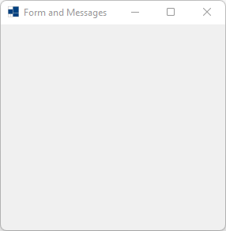

|
xtd
0.2.0
|
Loading...
Searching...
No Matches
form_and_messages.cpp
demonstrates some events received by form.
- Windows
- 

- macOS


- Gnome


#define TRACE 1 // Force to trace even if example is builded with -DNTRACE.
#include <xtd/xtd>
class form1 : public form {
public:
form1() {
text("Form and Messages");
}
protected:
template<typename type_t>
inline static uint16 LOWORD(type_t value) {
return static_cast<uint16>(static_cast<uint32>(value) & 0xFFFF);
}
template<typename type_t>
inline static uint16 HIWORD(type_t value) {
return static_cast<uint16>((static_cast<uint32>(value) >> 16) & 0xFFFF);
}
void wnd_proc(message& message) override {
form::wnd_proc(message);
switch (message.msg) {
case WM_ACTIVATE: ctrace << string::format("WM_ACTIVATE [activate={}]", as<bool>(message.lparam)) << environment::new_line << std::flush; break;
case WM_ACTIVATEAPP: ctrace << string::format("WM_ACTIVATEAPP [activate={}, threat={}]", as<bool>(message.wparam), message.lparam) << environment::new_line << std::flush; break;
case WM_CANCELMODE: ctrace << "WM_CANCELMODE" << environment::new_line << std::flush; break;
case WM_CHILDACTIVATE: ctrace << "WM_CHILDACTIVATE" << environment::new_line << std::flush; break;
case WM_CLOSE: ctrace << "WM_CLOSE" << environment::new_line << std::flush; break;
case WM_COMMAND: ctrace << string::format("WM_COMMAND [type=0x{:X8}, control={}]", message.wparam, message.lparam) << environment::new_line << std::flush; break;
case WM_CREATE: ctrace << string::format("WM_CREATE [CREATESTRUCT={}]", message.lparam) << environment::new_line << std::flush; break;
case WM_DESTROY: ctrace << "WM_DESTROY" << environment::new_line << std::flush; break;
case WM_ENTERSIZEMOVE: ctrace << "WM_ENTERSIZEMOVE" << environment::new_line << std::flush; break;
case WM_ERASEBKGND: ctrace << "WM_ERASEBKGNDT" << environment::new_line << std::flush; break;
case WM_EXITSIZEMOVE: ctrace << "WM_EXITSIZEMOVE" << environment::new_line << std::flush; break;
case WM_GETTEXT: ctrace << string::format("WM_GETTEXT [size={}, buffer={}]", message.wparam, message.lparam) << environment::new_line << std::flush; break;
case WM_GETTEXTLENGTH: ctrace << "WM_GETTEXTLENGTH" << environment::new_line << std::flush; break;
case WM_KILLFOCUS: ctrace << "WM_KILLFOCUS" << environment::new_line << std::flush; break;
case WM_LBUTTONDBLCLK: ctrace << string::format("WM_LBUTTONDBLCLK [Buttons={}, x={}, y={}]", message.wparam, LOWORD(message.lparam), HIWORD(message.lparam)) << environment::new_line << std::flush; break;
case WM_LBUTTONDOWN: ctrace << string::format("WM_LBUTTONDOWN [Buttons={}, x={}, y={}]", message.wparam, LOWORD(message.lparam), HIWORD(message.lparam)) << environment::new_line << std::flush; break;
case WM_LBUTTONUP: ctrace << string::format("WM_LBUTTONUP [Buttons={}, x={}, y={}]", message.wparam, LOWORD(message.lparam), HIWORD(message.lparam)) << environment::new_line << std::flush; break;
case WM_MBUTTONDBLCLK: ctrace << string::format("WM_MBUTTONDBLCLK [Buttons={}, x={}, y={}]", message.wparam, LOWORD(message.lparam), HIWORD(message.lparam)) << environment::new_line << std::flush; break;
case WM_MBUTTONDOWN: ctrace << string::format("WM_MBUTTONDOWN [Buttons={}, x={}, y={}]", message.wparam, LOWORD(message.lparam), HIWORD(message.lparam)) << environment::new_line << std::flush; break;
case WM_MBUTTONUP: ctrace << string::format("WM_MBUTTONUP [Buttons={}, x={}, y={}]", message.wparam, LOWORD(message.lparam), HIWORD(message.lparam)) << environment::new_line << std::flush; break;
case WM_MOVE: ctrace << string::format("WM_MOVE [x={}, y={}]", LOWORD(message.lparam), HIWORD(message.lparam)) << environment::new_line << std::flush; break;
case WM_MOUSEENTER: ctrace << "WM_MOUSEENTER" << environment::new_line << std::flush; break;
case WM_MOUSEHWHEEL: ctrace << string::format("WM_MOUSEHWHEEL [Buttons={}, delta={}, x={}, y={}]", LOWORD(message.wparam), HIWORD(message.wparam), LOWORD(message.lparam), HIWORD(message.lparam)) << environment::new_line << std::flush; break;
case WM_MOUSELEAVE: ctrace << "WM_MOUSELEAVE" << environment::new_line << std::flush; break;
case WM_MOUSEMOVE: ctrace << string::format("WM_MOUSEMOVE [Buttons={}, x={}, y={}]", message.wparam, LOWORD(message.lparam), HIWORD(message.lparam)) << environment::new_line << std::flush; break;
case WM_MOUSEWHEEL: ctrace << string::format("WM_MOUSEWHEEL [Buttons={}, delta={}, x={}, y={}]", LOWORD(message.wparam), HIWORD(message.wparam), LOWORD(message.lparam), HIWORD(message.lparam)) << environment::new_line << std::flush; break;
case WM_PAINT: ctrace << "WM_PAINT" << environment::new_line << std::flush; break;
case WM_RBUTTONDBLCLK: ctrace << string::format("WM_RBUTTONDBLCLK [Buttons={}, x={}, y={}]", message.wparam, LOWORD(message.lparam), HIWORD(message.lparam)) << environment::new_line << std::flush; break;
case WM_RBUTTONDOWN: ctrace << string::format("WM_RBUTTONDOWN [Buttons={}, x={}, y={}]", message.wparam, LOWORD(message.lparam), HIWORD(message.lparam)) << environment::new_line << std::flush; break;
case WM_RBUTTONUP: ctrace << string::format("WM_RBUTTONUP [Buttons={}, x={}, y={}]", message.wparam, LOWORD(message.lparam), HIWORD(message.lparam)) << environment::new_line << std::flush; break;
case WM_SETFOCUS: ctrace << "WM_SETFOCUS" << environment::new_line << std::flush; break;
case WM_SETTEXT: ctrace << string::format("WM_SETTEXT [text=\"{}\"]", reinterpret_cast<char*>(message.lparam)) << environment::new_line << std::flush; break;
case WM_SHOWWINDOW: ctrace << string::format("WM_SHOWWINDOW [show={}]", as<bool>(message.wparam)) << environment::new_line << std::flush; break;
case WM_SIZE: ctrace << string::format("WM_SIZE [type={}, width={}, heignt={}]", message.wparam, LOWORD(message.lparam), HIWORD(message.lparam)) << environment::new_line << std::flush; break;
case WM_XBUTTONDBLCLK: ctrace << string::format("WM_XBUTTONDBLCLK [Buttons={}, x={}, y={}]", message.wparam, LOWORD(message.lparam), HIWORD(message.lparam)) << environment::new_line << std::flush; break;
case WM_XBUTTONDOWN: ctrace << string::format("WM_XBUTTONDOWN [Buttons={}, x={}, y={}]", message.wparam, LOWORD(message.lparam), HIWORD(message.lparam)) << environment::new_line << std::flush; break;
case WM_XBUTTONUP: ctrace << string::format("WM_XBUTTONUP [Buttons={}, x={}, y={}]", message.wparam, LOWORD(message.lparam), HIWORD(message.lparam)) << environment::new_line << std::flush; break;
case WM_APPIDLE: /*ctrace << "WM_APPIDLE" << environment::new_line << std::flush;*/ break;
default: ctrace << string::format("[{}]", message) << environment::new_line << std::flush; break;
}
}
};
auto main() -> int {
trace_form trace_form;
application::run(form1 {});
}
Generated on Fri Dec 19 2025 22:31:37 for xtd by Gammasoft. All rights reserved.